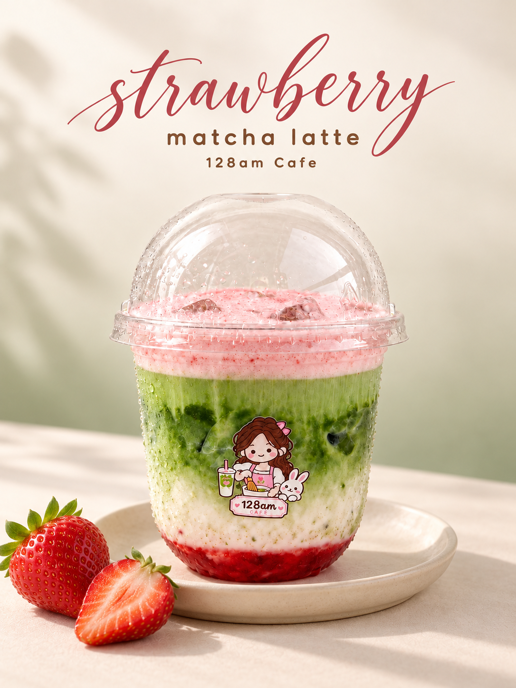
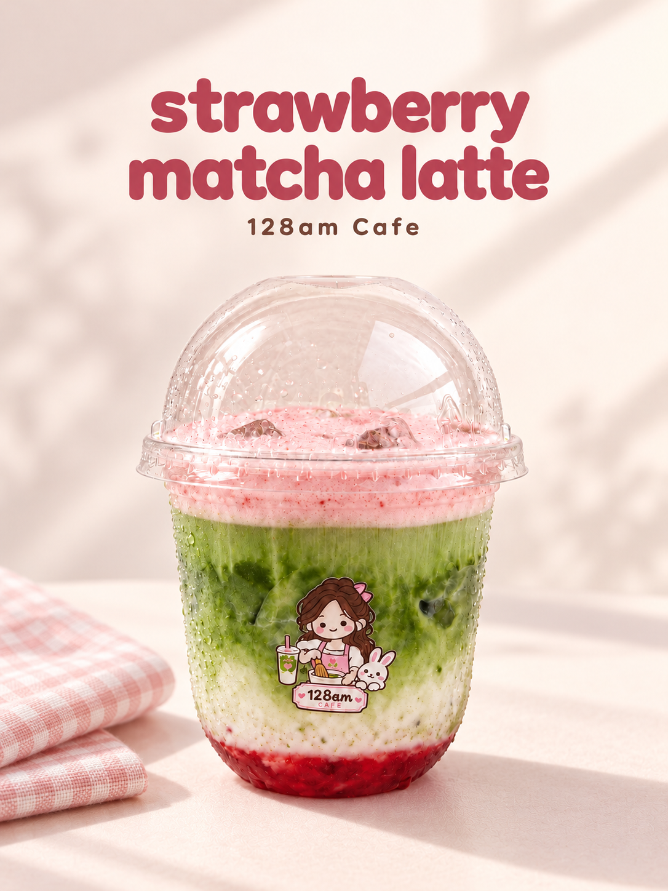
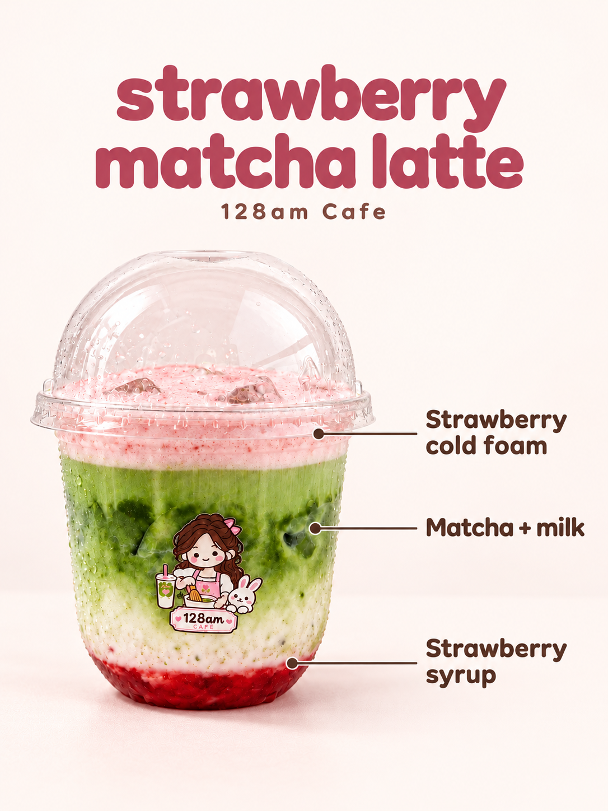
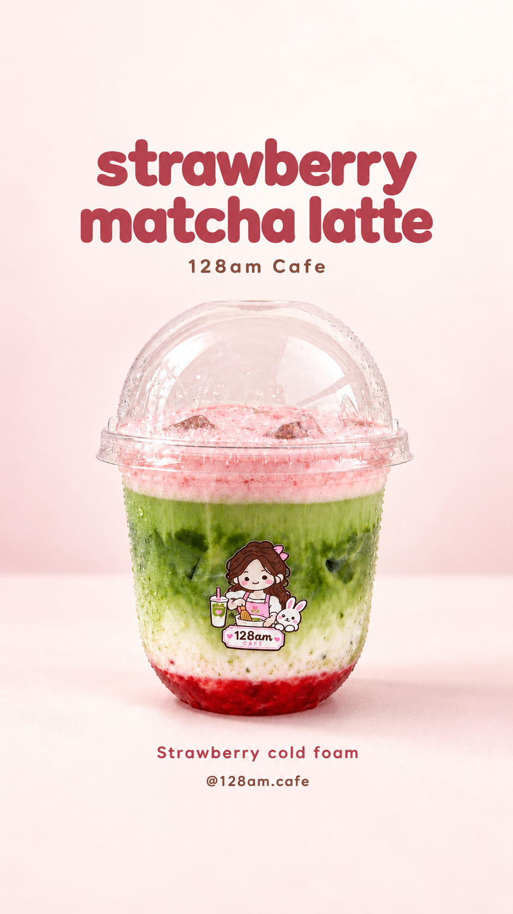
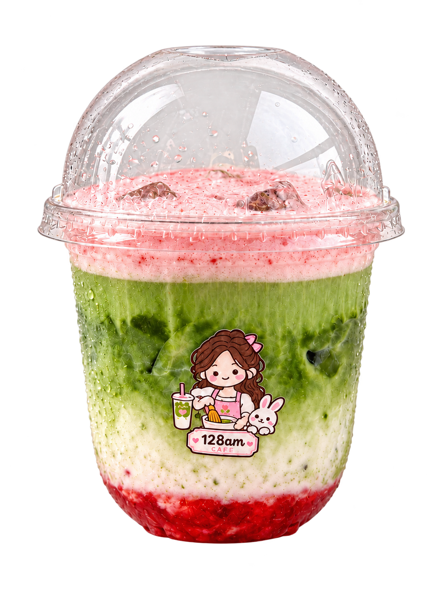

01 · FEED · 1086 × 1448Cream studio heroA clean product cover with clearly pink strawberry cold foam.Download PNG
02 · FEED · 1086 × 1448Sunlit cursive editorialElegant lettering, soft daylight and strawberry styling.Download PNG
03 · FEED · 1086 × 1448Blush ginghamA warm, minimal setting with subtle texture.Download PNG
04 · FEED · 1086 × 1448Meet the layersPink cold foam, matcha and milk, and strawberry syrup.Download PNG
05 · STORY · 941 × 1672Story layoutVertical composition with room above and below the main content.Download PNG
06 · CUTOUT · 1086 × 1448Transparent cupReusable PNG cutout for your own social layouts.Download PNG